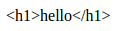

HTML转义
- Django对字符串进行自动HTML转义，如在模板中输出如下值：
视图代码：
def index(request):
return render(request, 'temtest/index2.html',
{
't1': '<h1>hello</h1>'
})
模板代码：
{{t1}}
- 显示效果如下图：

会被自动转义的字符
- html转义，就是将包含的html标签输出，而不被解释执行，原因是当显示用户提交字符串时，可能包含一些攻击性的代码，如js脚本
- Django会将如下字符自动转义：
< 会转换为<
> 会转换为>
' (单引号) 会转换为'
" (双引号)会转换为 "
& 会转换为 &
- 当显示不被信任的变量时使用escape过滤器，一般省略，因为Django自动转义
{{t1|escape}}
关闭转义
- 对于变量使用safe过滤器
{{ data|safe }}
- 对于代码块使用autoescape标签
{ % autoescape off %}
{{ body }}
{ % endautoescape %}
- 标签autoescape接受on或者off参数
- 自动转义标签在base模板中关闭，在child模板中也是关闭的
字符串字面值
- 手动转义
{ { data|default:"<b>123</b>" }}
- 应写为
{ { data|default:"<b>123</b>" }}